〇影片：2 分鐘把六個畫面看一遍
旁白是電腦合成的台灣國語，字幕可以關。影片裡的畫面跟下面十二張圖是同一批。
壹六個畫面，一張一張對
① 切到 Codex
行前第 3 項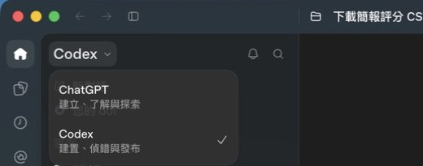
② 建立專案＝「開啟資料夾」
行前第 9 項・卡 0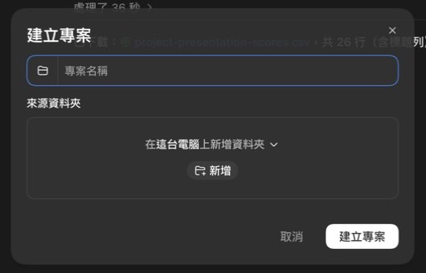
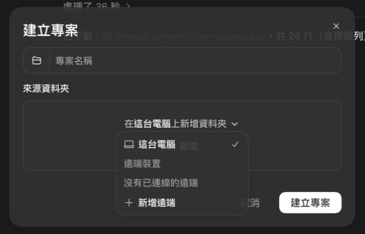
③ 權限選單：維持「要求核准」
行前第 7 項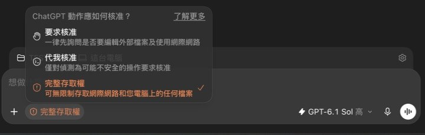
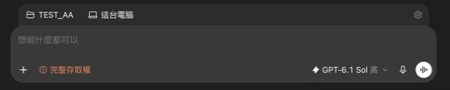
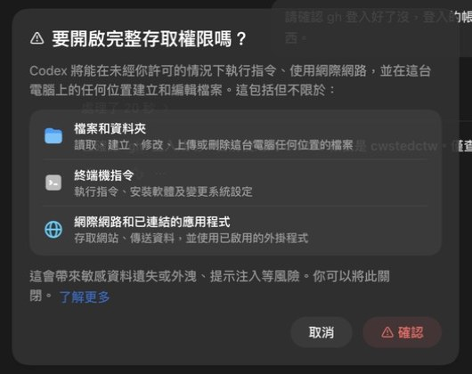
④ 允許視窗：看一眼，按「允許一次」
第三塊下載 CSV・試評第 3 步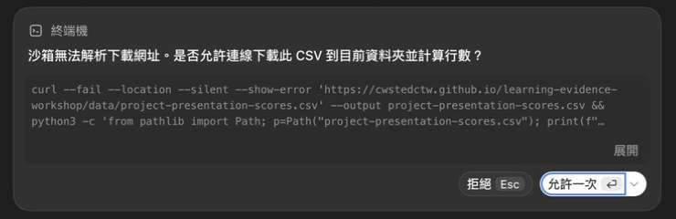
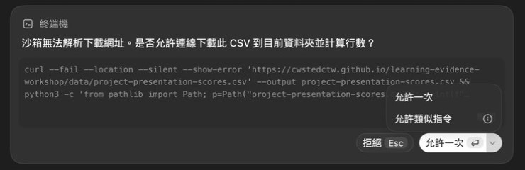
⑤ 允許之後它才動手
每一塊都一樣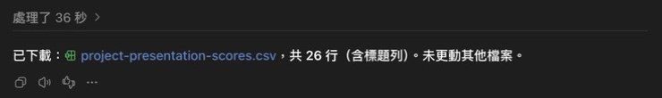
⑥ gh 登入檢查也會問一次
行前第 8 項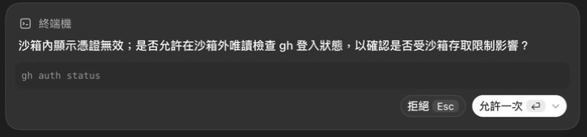
gh auth status，一樣跳允許卡（沙箱裡看不到登入憑證）。按「允許一次」。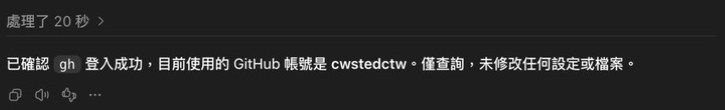
選好之後長這樣
對照用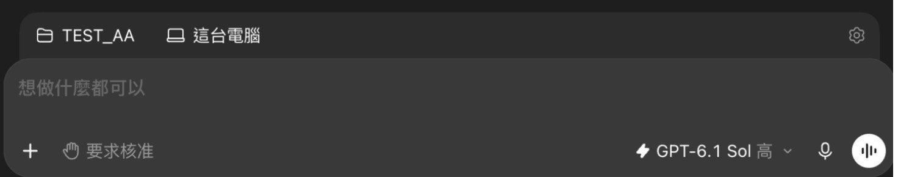
貳三件要知道的
- 哪些動作會問：在「要求核准」下，它在你選的資料夾裡建檔、改檔不會問；要連網（下載）、要讀沙箱外的東西（gh 登入憑證、下載資料夾）、要裝軟體才會問。所以第一塊四句通常一路順，第三塊下載 CSV 跟搬下載檔那兩步會各問一次。
- 允許視窗被擋住：全螢幕的瀏覽器可能蓋住 ChatGPT 視窗，看起來像卡住。切回 ChatGPT 視窗看一眼，卡通常就在那裡等你。
- 沒有任何畫面要你打密碼：這一頁所有畫面都不會要帳號密碼。真的跳出要密碼的視窗（GitHub 登入、裝軟體的系統密碼），那是你的電腦在問你，自己打，不要貼給 AI。